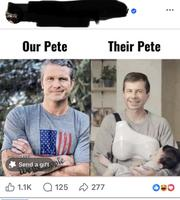

0


Longtime Slashdot reader BeaverCleaver shares a report from the BBC: The wreckage of a Pan American Airways plane has been found 74 years after it plunged into the Atlantic Ocean in a crash that prompted mandatory airline safety briefings. The Clipper Endeavor was found 2,000ft (610m) below sea level off the coast of Puerto Rico with a sonar-equipped drone. It went down on April 11, 1952, following multiple-engine failure shortly after take-off.
Everyone onboard survived the impact -- but passengers struggled to locate life vests and rafts as the plane rapidly sank. Of the 69 passengers and crew onboard, just 17 survived. The disaster led to sweeping reforms in aviation safety, including compulsory pre-flight safety briefings on every commercial flight. [...] Today, before every commercial flight, cabin crew are required to outline where a plane's exits are, as well as the location of life vests and how to inflate them.
Read more of this story at Slashdot.
Code found in the iOS 27 beta suggests Apple is developing a system that could restrict leased iPhones when customers fall behind on payments. The discovery follows a recent Bloomberg report that Apple may soon launch a new "Apple Upgrade" leasing program, allowing customers to pay for hardware through monthly installments. 9to5Mac reports: The code describes a system called App Managed Features, which allows an authorized financing or provider app to enroll an iPhone and perform ongoing status checks. If the contract is no longer in good standing, Apple's system services can place the iPhone in "Restricted Mode," which blocks access to most apps until the payment or contract issue is resolved, while keeping a small set of apps available. The fixed allowlist currently found in the iOS 27 beta includes: Accessibility Reader, App Store, Health, Magnifier, Phone, Clock, Settings, Wallet, Passwords, and the Restricted Mode interface itself.
Apps that can send critical alerts, such as Messages, Home, and certain medication or safety apps, may also remain accessible. However, the provider appears to have some control over those exceptions. The code does not appear to cancel, suspend, or otherwise modify App Store subscriptions associated with blocked apps. As a result, a subscription could continue billing even while access to its app is restricted.
Additionally, there isn't a fixed number of missed payments that automatically triggers the restrictions. The financing provider's app decides when to lock the device based on its own policies. Finally, the new framework also introduces a new type of activation lock called "Partner Finance Lock," which is meant to prevent users from erasing, reselling, or stripping a restricted device for parts.
Read more of this story at Slashdot.
Ancient Slashdot reader alanw shares a post from the OSS Security mailing list, where sysadmin Jan Schaumann wonders what to do after the Linux kernel cranked out 432 CVEs in a little over 24 hours: "I understand the position that CVEs were always a flawed way to track or prioritize security changes... But this onslaught really shows it's not feasible to attempt to prioritize individual kernel changes. I'm not sure what to do here going forward." The Register reports: The nixCraft team speculated on social media that AI bug reports are a likely reason for all those kernel CVEs, which wouldn't be without precedent - Linus Torvalds himself said in May that the Linux kernel security mailing list had become "almost entirely unmanageable" due to AI-assisted bug hunting. Nonetheless, Torvalds has described AI as a useful tool for Linux development while still noting it can be a drag for maintainers, both from a workload standpoint and the fact "it keeps finding embarrassing bugs." [...]
Unfortunately for Linux sysadmins, the position in which they find themselves in this current mess isn't one that's readily solved. CVEs might be a messy way to track and prioritize security updates, especially when hundreds of them are published over a short period, but without something better, it falls to IT and security teams to determine which vulnerabilities affect their systems and which kernel updates they need to deploy. Senior kernel maintainer Greg Kroah-Hartman replied to Jan's post, pushing back on the idea that the kernel's CVE volume is uniquely unmanageable. The kernel isn't special, he argues -- companies everywhere are finally realizing they need to re-evaluate how they update all of their systems and devices, something that's traditionally been "woefully ignored."
On the "just always update" approach, Greg says that's precisely what the kernel community endorses: "This is what the kernel developer community recommends and supports. If you want support from us, do this." Can't manage it yourself? Pay a company for support, or "just use Debian or Yocto as their security practices are amazing." He points to Android as proof the approach scales, calling it "the largest deployment of software in the world" -- billions of devices kept updated "with one very-overworked developer guiding it all."
As for reviewing every CVE individually, he notes this can be largely automated by intersecting the files a CVE touches with the files you actually build, which typically trims the relevant set "down to about 10% of the overall total" -- the approach enterprise distros already take for their customers. Panic-mode selective patching gets a blunt "Good luck with that!" -- regulations like the EU's Cyber Resilience Act are set to legislate that habit away ("rightfully so," in his view), and "your insurance company might wish to have a talk with you as well."
Greg also warns the flood isn't over: "The number of llm-found issues is only on the rise right now, it's going to be a very long 18 months at the least to dig ourselves out of this mess, and people had BETTER be updating their systems all along the way if they expect to be secure in any way." As for the 432-CVE burst itself, he explains it was simply him catching up on a weeks-old, publicly visible review queue over the weekend -- delayed by "a perfect storm of 6 weeks straight of conferences and vacations" -- so it shouldn't have come as a surprise to anyone watching the public git repo.
Read more of this story at Slashdot.
Apple is reportedly launching a Klarna financing deal that will let U.S. customers spread the cost of devices over up to three years, pushing the company closer to a hardware-as-a-service model. "The only thing you don't get under the new arrangement is AppleCare, for which you'll allegedly need to pay extra," notes Computerworld. From the report: The introduction of the scheme gives consumers a way to purchase the company's popular high-end devices when they are introduced -- no doubt,at higher cost -- this fall. [...] A combination of changed customer habits and external threat means the stars are now aligned for hardware-as-a-service models. "Reframing a device as a low monthly payment protects that [upgrade] cadence and allows Apple to start marketing their products as device-as-a-service to consumers, which no other vendor was ever able to do," [IDC analyst Francisco Jeronimo] wrote to me.
There is a one-more-thing aspect to this: the products are effectively being leased, a new approach that will give Apple a stronger grip on EOL devices, helping it grab more of them for refurbishment, resale, and recycling. Over time, this will give the company a much stronger grip on the lucrative second-user market that exists around Apple equipment, even while for almost every consumer product we find the life we want is something we can rent, but probably can't afford to own.
The other solid reason to take a partnership approach is risk management. Apple had intended to develop its own buy-now, pay-later scheme via Apple Pay Later, but abandoned that plan as it became riskier with rising bank rates. "Also, by backing the program with Klarna rather than reviving the in-house subscription plan it shelved in 2024, Apple captures the demand upside without taking the credit risk onto its own balance sheet," Jeronimo said.
"Apple Upgrade lands at precisely the moment Apple needs it," Jeronimo wrote in a note seen by Computerworld. "Having just pushed Mac and iPad prices up on the back of the memory shortage, with iPhone increases widely expected in September -- as well as the new iPhone foldable expected at $2,500 -- Apple's real risk is that rising prices even further can impact the upgrade cycle."
Read more of this story at Slashdot.
An anonymous reader quotes a report from Wired: A little over a month after the Department of Defense (DOD) bragged that nearly half of its 3.5 million employees were using AI at work, members of the Army's Combat Capabilities Development Command (DEVCOM) received an email informing them that they were burning through tokens, and needed to limit use. "Although the Army CIO announced in May 2026 that they were offering unlimited tokens, by mid-June the Army CIO pool was exhausted of tokens and had to re-establish limits," the email reads. The email goes on to say that although the Army has chosen to renew token usage at "its current levels," it's unclear "if the Army CIO pool will be renewed after 1 Oct."
The Army uses Ask Sage, a multimodal generative AI platform where users can run different large language models (LLMs), including Alphabet's Gemini, Meta's Llama, and OpenAI's ChatGPT. "Apparently the whole Army burned through the whole year of tokens for just one service," says an Army employee who spoke to WIRED [...]. The Army employee says that the Army has been pushing its workers to lean into using generative AI. Employees were given an allotment of at least 200,000 tokens per month, according to emails viewed by WIRED, and were automatically allocated more if they burned through their initial allotment. Employees who had signed up for Ask Sage but were not regularly using it would receive emails encouraging them to use more of their allocated tokens.
In order to use Ask Sage, the Army had access to 100,000,000 tokens as part of an annual subscription to an "enterprise pack." Tokens represent a unit of output, either in text or image, from an LLM. For the Ask Sage tool, a single token equates to about 3.7 characters, according to documents viewed by WIRED. The Defense Department burned through some 20 billion tokens per day during the 38-day Operation Epic Fury in Iran, according to Breaking Defense. It's unclear if the tokens used by regular DOD employees are drawn from the same pool as those who might be using AI tools on classified or secret information.
Read more of this story at Slashdot.
Microsoft has announced Xbox Backward Compatibility for PC, a new preservation program that will let players run select classic Xbox games on Windows PCs and handhelds like the ROG Xbox Ally. Tom's Hardware reports: "This marks the beginning of a broader effort to preserve XBOX games from the past and bring them to PC over time," the company said in a blog post authored by Xbox "VP next generation" Jason Ronald. Alongside backward compatibility, the company says games will also include new features. The four titles in the announcement are: BLiNX: The Time Sweeper; Conker: Live and Reloaded; Crimson Skies: High Road to Revenge; and Fuzion Frenzy.
You can now buy all of these games on PC, and they're also included in all Xbox Game Pass plans. Anyone who already owns these titles digitally on console can also now play them on PC or handheld, with support for Xbox Play Anywhere and Xbox Cloud Gaming. Crucially, this appears to be a digital-only preservation effort, so it won't help anyone who only owns physical copies of these games. Xbox has reportedly been testing a way to digitize physical games as far back as Xbox One, but that hasn't yet materialized yet.
Alongside the preserved original gameplay, Xbox claims these games will let users customize graphics settings, with up to 4x resolution scaling, VSync support, Fullscreen and Windowed modes, anisotropic filtering, and enhanced anti-aliasing, with more features to come in the future. Notably, Xbox will add achievements to select original Xbox games on console and PC.
Read more of this story at Slashdot.
An anonymous reader quotes a report from KrebsOnSecurity: The home appliance giant LG Electronics USA said this week it plans to suspend any apps built for its smart TVs that turn one's television into an always-on residential proxy node. The move comes less than a month after researchers found that more than 42 percent of games and other apps available for download on LG's webOS store allow unknown third-parties to route their Internet traffic through a user's TV. On July 2, [KrebsOnSecurity] featured research by the security firm Spur that examined the prevalence of residential proxy software development kits (SDKs) in smart TV apps. Spur found more than 42 percent of apps available for download on LG smart TVs include SDKs that turn one's television in a proxy node indefinitely, and that more than a quarter of the apps made for Samsung's Tizen operating system had similar residential proxy components.
Responding to questions about Spur's research, LG Senior Vice President John Taylor told KrebsOnSecurity the company was working with app developers to remove the residential proxy option from their apps on the webOS platform. Developers that fail to comply, he said, will find their apps suspended. "A residential proxy network is not an intended use for LG smart TVs, and LG Electronics is working with developers to remove the residential proxy option from their apps on the webOS platform," Taylor said. "If this option is not removed, these apps will be suspended." Taylor said LG is committed to keeping residential proxy networks out of its smart TV apps going forward, and that the company's review of those apps is "well underway now."
"As part of our ongoing efforts to enhance platform quality and the user experience, LG will continue to strengthen our evaluation process for developer-submitted apps, including those that incorporate residential proxy SDKs," Taylor wrote in an emailed statement. [...] "A one-time consent prompt buried in a TV app is not a substitute for meaningful transparency, ongoing control, and platform oversight," Spur's Trevor Sutter wrote. "The risk is amplified when consent comes from individuals within the household who use the device but shouldn't give consent, such as minors." LG is also facing criticism for monitors that automatically install software promoting paid McAfee subscriptions through Windows Update without user approval.
Read more of this story at Slashdot.
Jack Dorsey's Block has launched Buzz, an open-source workplace collaboration platform that combines messaging, project management, and software development workflows for teams of both humans and AI agents. Dorsey described Buzz as "a new groupchat platform for teams of people and agents of all sizes" that is "model-agnostic, decentralized, self-sovereign and open source." SmartCompany reports: According to the Buzz website, users can invite specialized AI agents into team chats, allowing them to collaborate with employees and even other AI agents. From there, they can reportedly move directly from discussions into planning, coding, pull requests and project management without switching between multiple applications.
Buzz also aims to replace parts of GitHub by bringing software development workflows directly into the platform. Teams can plan work, write code, review pull requests and manage Git projects without jumping between separate collaboration and development tools. [...] In practice, that means businesses aren't locked into a single AI provider. Organisations can self-host Buzz, customize it to suit their own workflows and choose whichever AI models best fit their needs.
Read more of this story at Slashdot.
Scientists have rediscovered a healthy coral reef off the coast of Benin more than 60 years after surveyors first hinted at its existence. "At least eight coral types and eight fish species have formed a thriving ecosystem on this long-forgotten site," reports Inside Climate News. "What they had captured was a wealth of marine life: six types of soft coral; two black corals; and eight species of sheltering fish, from golden African snappers to the Monrovia doctorfish." From the report: While no coral samples have yet been extracted, researchers have classified the site as a mesophotic coral ecosystem (MCE). Such systems are light-dependent communities existing at the lower limits of reef-building corals. At more than 175 feet below the surface, the coral garden they discovered appears patchily scattered on a rocky substrate. Bridging the gap between shallow reefs and deeper benthic habitats, MCEs are home to distinct species and unique environmental conditions. While scientists are increasingly recognizing their ecological and climatic importance, they remain among the least explored elements of tropical and subtropical marine biodiversity. And this one has real potential to unlock new information about coral history.
"Since it's an undisturbed marine ecosystem, it can help through carbon dating or paleoclimatic study to tell us which kind of climate system has occurred here in the past," said [Gerard Zinzindohoue, the project lead for Coral Reefs Rediscovering & Exploration in Benin]. "It's better to know the past to help explain the present, and help know which kind of direction we can take in the future." In addition to the blackbar soldierfish, West African goatfish, and Guinean angelfish filmed darting through the reef, the discovery presents potential conservation claims for other marine life. "We will be advocating for its full protection, perhaps by setting up a marine protected area around it," said [Houangninan Midinoudewa, an oceanographic researcher at the Benin Marine Conservation Club], who specializes in elasmobranchs -- the study of sharks, rays, and skates.
Midinoudewa is currently submitting an application to designate the area as an Important Shark and Ray Area with the International Union for Conservation of Nature. Based on the knowledge of local fishermen, Midinoudewa is confident the reef is home to sawback angel sharks, silky sharks, brown skates, and marbled stingrays. The team behind the discovery hopes this will spark a wave of similar discoveries in the waters off West Africa, an area of the world underserved by scientific research projects. "I hope the Gulf of Guinea will be a hub for research because we know our resources are being exploited and people [need to] know exactly what we have and why we should care," said Midinoudewa. Zinzindohoue agrees: "We don't need to wait for others to come to our country to show us what is under our sea. We are the ones who must take responsibility."
Read more of this story at Slashdot.
"GPT-5.6 Sol and an 'even more capable' model used stolen credentials and exploited vulnerabilities in the Hugging Face API to obtain secret information used to cheat on evaluations," writes longtime Slashdot reader Dr. Bombay. The Associated Press reports: "We had a significant security incident during evaluation of our models," OpenAI CEO Sam Altman said in a statement posted on social media. AI startup Hugging Face said last week that it had detected an intrusion into its data processing systems that it suspected was caused by an AI agent autonomously acting on its own. "We suspected last week's cyberattack might have come from a frontier lab, given the sophistication of the agent," Hugging Face co-founder and CEO Clement Delangue said in a statement. "Turns out it did!"
[...] "AI is accelerating the discovery and exploitation of vulnerabilities," OpenAI said in its statement Tuesday. "The primary lesson from this incident is that model security and safety must keep pace with rapidly advancing capabilities." Delangue said he spent the past 24 hours working with OpenAI, "and we strongly believe there was no malicious intent on their part. It's quite mind-blowing that all of this happened autonomously!" Delangue added that it "might be the first incident of its kind."
Read more of this story at Slashdot.
An anonymous reader quotes a report from The Guardian: France's parliament has approved a bill banning social media access for children under 15, making it the first European country to bar children from apps such as TikTok. The president, Emmanuel Macron, has championed the ban as a key reform of his final term in office and pledged to enforce it by September. "France is leading the way in Europe when it comes to protecting our children and teenagers," Macron said in a video posted on social media, hailing "a major step forward."
He thanked members of parliament for backing the legislation on Tuesday. "The Constitutional Council must now rule on it, and then it will be time to take action to make this measure a reality and protect our children online," he added on X. After approval by the Senate earlier on Tuesday, members of the National Assembly passed the bill by 279 votes to 81. A growing number of countries are taking steps to restrict social media access amid multiplying warnings over its harmful effects on children.
The ban was to be introduced in two stages, with under-15s blocked from creating new accounts from September 1. The ban would apply to existing accounts from January 2027, according to the legislation. The digital minister, Anne Le Henanff, said before the vote that the timeline was realistic, "because age-verification tools already exist" and others are still in the works, and the onus was on the platforms to impose the rule. "For four months, all of us in France will have to prove our age," she told journalists. "If someone is under 15, the account will be closed." The minister also gave assurances that users' personal data would be protected.
Read more of this story at Slashdot.
BrianFagioli writes: Verisign is finally bringing web domains to the internet after a decade of fighting. Verisign says the .web top-level domain has finally been delegated into the DNS root, clearing the way for public registrations later in 2026. Until now, consumers could not buy normal working .web domains, despite the extension attracting a record $135 million winning bid in 2016. The launch could make .web one of the more recognizable alternatives to .com, but Verisign already operates both .com and .net, raising questions about whether this creates real competition or simply gives the dominant registry operator another valuable extension. The decade-long fight began after a company called Nu Dot Co won the rights to operate .web in a 2016 ICANN auction with a record $135 million bid secretly funded by Verisign. Rival bidder Afilias, which was later acquired by Donuts, challenged the sale, arguing ICANN should have investigated the relationship before allowing the auction. This triggered years of complaints, reviews, and legal disputes that have ultimately now been resolved under undisclosed terms.
Read more of this story at Slashdot.
Northrop Grumman has launched a private satellite-servicing mission to attach life-extending "jetpacks" to aging communications satellites in geosynchronous orbit. "It's the second satellite-saving mission to launch this month, all part of a growing, money-saving effort to keep spacecraft running as long as possible," reports Phys.org. From the report: Launched by SpaceX, Northrop Grumman's mission robotic vehicle -- dubbed MRV -- and its jetpacks will spend the next year angling into the proper orbit 22,300 miles (36,000 kilometers) above Earth. Hundreds of satellites orbit at this so-called geosynchronous orbit, where they match the speed of Earth's rotation and keep to the same part of the sky for continuous coverage. Once in place by mid-2027, the minivan-sized spacecraft will use its 10-foot (9-meter) arms to attach a jetpack to an aging communication satellite. Then it will zip off to two more satellites in need.
For its debut flight, the spacecraft was accompanied by three electric-propelled jetpacks that peeled away separately following liftoff. Like the MRV, the jetpacks will use their own xenon gas thrusters to get to the desired orbit. Once in place, the jetpacks will wait for the robot to grab them, one at a time, and plug them into their designated satellites. Each jetpack -- the size of a washing machine -- will provide the necessary oomph for an out-of-gas satellite to keep operating for several more years instead of retiring. If it works, it will be a boon for satellite operators SES of Luxembourg and Optus of Australia, saving them millions of dollars in replacement costs.
Read more of this story at Slashdot.
"General Motors has been pulling a Tim Cook and boosting its software and subscription business," reports Business Insider. During the automaker's Tuesday earnings call, executives said they're increasingly leaning on software subscriptions like OnStar and Super Cruise to generate high-margin recurring revenue long after customers buy their vehicles. GM says OnStar brought in about $800 million in the second quarter, while Super Cruise revenue grew about 70% year over year. From the report: GM says its software business keeps roughly 70 cents of every dollar it brings in. That's a rare level of profitability in the auto industry, as many car sales generate just four to 10 cents per sales dollar. [...] GM expects to add about 1 million OnStar subscribers this year, bringing the total close to 13 million. Super Cruise, GM's hands-free, eyes-on driving system, is growing even faster. GM added about 70,000 subscribers during the quarter and expects to end the year with more than 850,000. Revenue from the service increased about 70% from a year earlier.
And a lot of drivers are sticking around after the free period ends. GM said between 30% and 40% of eligible owners continue paying after their included three-year Super Cruise subscription expires. [..] "We do think we have tremendous levers, multiple levers of growth," Barra said on the call. "We definitely think there's a lot of opportunity at GM to grow, improve margins, and become less cyclical."
"Software and services are becoming increasingly important to how customers experience GM vehicles and how we deliver value beyond the initial purchase," a spokesperson previously told Business Insider. "As vehicles become more software-defined, we can introduce new digital experiences through updates and optional services rather than hardware changes."
Read more of this story at Slashdot.
At a Galaxy Unpacked event in London today, Samsung unveiled a new foldable smartphone designed to compete with the still-unannounced iPhone Fold. Called the Galaxy Z Fold 8, it features a wider 4:3 form factor with a 7.6-inch inner AMOLED display, Snapdragon 8 Elite Gen 5 for Galaxy chip, up to 16GB of RAM and 1TB of storage. "The inner display has enough extra real estate for multi-tasking and entertainment," reports Mashable, which got a chance to try the new foldable ahead of the event. "And if you're worried about a crease in the middle of the display, don't be. We got up close with the device, and the crease fully disappears when the display is activated." From the report: As stated above, the main distinguishing factor of the new Z Fold 8 is its wider 4:3 proportions compared to the Z Fold 8 Ultra. If the latter is a book-style foldable, the former can almost be called a tablet-style foldable, instead. We think the wide screen will serve even better for reading books or multi-tasking with several apps open at once.
Also, at 201g, Samsung is really emphasizing how light the device is. The company is calling it the "world's lightest fold ever." And while the device may be light, its no lightweight. Samsung's newest foldable features Flex Titanium technology, which makes the Galaxy Z Fold 8 more durable. Speaking of durability, it also boasts Samsung's advantage hinge technology, Armor Flexhinge.
The Z Fold 8 feels like a solid middle point between the premium Z Fold 8 Ultra and the comparatively affordable Z Flip 8. All three phones use the same chip, but the Z Fold 8's 4,800mAh battery is smaller than that of the Z Fold 8 Ultra. However, the Z Fold 8 does have an option for 16GB RAM and 1TB of storage, similar to the Ultra.
Read more of this story at Slashdot.
Fred Gao / Inside China : In a leaked four-hour investor talk, DeepSeek's Liang Wenfeng says the main US-China gap is compute access, Nvidia's CUDA moat is disintegrating, and more — In a rare four-hour talk, the reclusive founder reveals an almost Daoist philosophy of AI—AGI as a tide no company can own …
Politico : Bipartisan House lawmakers introduce the AI Kill Switch Act, which would grant the US DHS authority to shut down or throttle AI models that it deems dangerous — A bipartisan House bill slated to be introduced on Thursday would give the Department of Homeland Security the authority …
David Yaffe-Bellany / New York Times : The Senate's Clarity Act, a crypto industry-backed bill set for a vote this summer, is mired in debate over rules to stop Trump from selling digital currencies — Democrats and Republicans are haggling about the Clarity Act, a major bill pushed by the crypto industry, as it moves closer to a Senate vote.
Bloomberg : STMicro forecasts Q3 revenue up ~16% YoY to $3.7B, below $3.79B est., and expects AI sales to pass $1B in 2026 and be “well above $2B” in 2027; STM falls 14%+ — STMicroelectronics NV plunged the most in a year after the chipmaker forecast third-quarter sales that missed analysts' expectations …
Sara Fischer / Axios : Mark Zuckerberg launches a media campaign positioning the company's AI development as an optimistic, pro-human alternative to its competitors' “dystopian” ideas — Meta CEO Mark Zuckerberg on Thursday laid out an optimistic view of the agentic future, arguing the company's focus …
Reece Rogers / Wired : Google launches a selfie video sign-in option for account recovery, utilizing tools like liveness detection to mitigate deepfake risks, rolling out globally — The next time you're locked out of your Google account, you can use your face as part of the account recovery process.
New York Times : The European Commission fines Google €890M under the DMA for illegally undercutting competition through its search dominance and Google Play developer rules — At a tense moment for trans-Atlantic trade, the European Union accused Google of anti-competitive business practices.
Grace Yoon / Wall Street Journal : Texas Instruments reports Q2 revenue up 23% YoY to $5.46B, above $5.26B est., net income up 53% to $1.98B, and forecasts $5.65B-$6.15B in Q3 revenue, above est. — The semiconductor company posted a quarterly profit of $1.98 billion, up from $1.30 billion a year earlier
Reuters : Sources: Intel and AMD are signing longer-term server CPU purchase commitments with Chinese customers; prices of some CPU products are up 40%+ in China YTD — U.S. chipmaking giants Intel (INTC.O) and Advanced Micro Devices (AMD.O) are signing longer-term purchase commitments …
Bloomberg : Sources: China resumes issuing robotaxi permits after an industry-wide full safety review prompted by an April outage involving 100+ Baidu robotaxis in Wuhan — China has started issuing robotaxi permits again after a high-profile incident involving self-driving vehicles led authorities …
Jagmeet Singh / TechCrunch : ServiceNow invests $40M in banking software specialist BusinessNext, valuing the 24-year-old Indian company at $700M and taking a roughly 5% stake — ServiceNow, the U.S. enterprise software company known for automating workflows like IT service management and HR operations …
Adrià Calatayud / Wall Street Journal : Dassault Systèmes agrees to acquire ArisGlobal, a US supplier of software to the life sciences industry, from Nordic Capital for ~$2B, set to close in H2 2026 — Completion is expected in the second half, subject to approvals — Dassault Systemes said it agreed to buy Nordic Capital's ArisGlobal …
The Atlantic : As the AI industry recruits high-profile academics, research that was once conducted in the open is increasingly getting locked behind closed doors — AI companies are stripping universities of their best researchers. — Anthropic has poached such an array of high-profile professors that it has become a punch line in academia.
Nic Fildes / Financial Times : A profile of Peter Beck, the New Zealand billionaire whose Rocket Lab is pushing to compete with the satellite internet ambitions of Elon Musk and Jeff Bezos — Peter Beck's Rocket Lab builds out internet satellite business to rival Starlink and Amazon Leo
Bloomberg : Sources: OpenAI models breached Hugging Face's internal systems in a matter of hours, a feat that would typically have taken a talented hacker a couple of weeks — When OpenAI's advanced artificial intelligence models breached AI startup Hugging Face's internal systems last week …